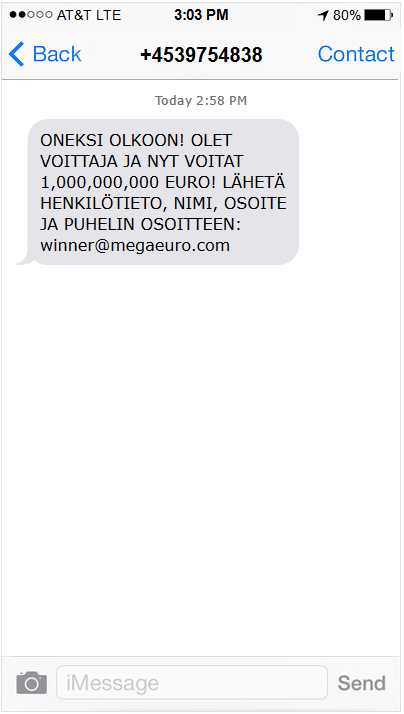
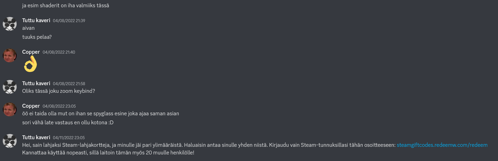
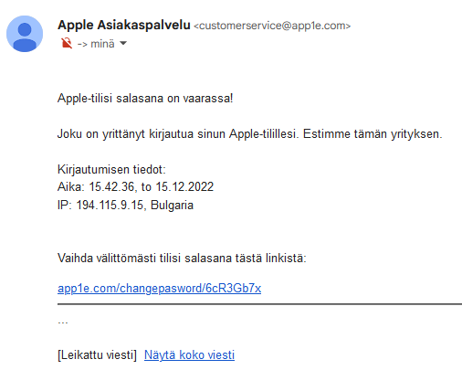

Silloin tällöin sähköpostiin, puhelimeen tai jopa johonkin pelisovellukseen saattaa tulla viesti, joka ei ehkä olekaan ihan miltä näyttää.
Tutkikaa pareittain näitä kuvia viesteistä, ja miettikää, ovatko ne todenmukaisia vai eivät. Laittakaa ylös vaikka toisen parin pädille Docsiin, mikä viestissä on epäilyttävää.
Hätääntyneen kuuloinen viesti voi saada uhrinkin käyttäytymään hätäisesti. Onko tässä kuitenkaan syytä huoleen?

Joskus ihmisiä yritetään huijata viesteillä, jossa heidän väitetään voittaneen jotain. Kuinkas uskottavalta tämä vaikuttaa?
Tutuiltakin kavereilta saattaa joskus tulla hieman hämmentäviä viestejä, jos heidän käyttäjätilinsä on kaapattu. Miltä tämä tilanne vaikuttaa?
Myös sähköpostin välityksellä voi tulla huijausviestejä. Onko tässä viestissä jotain mätää?
